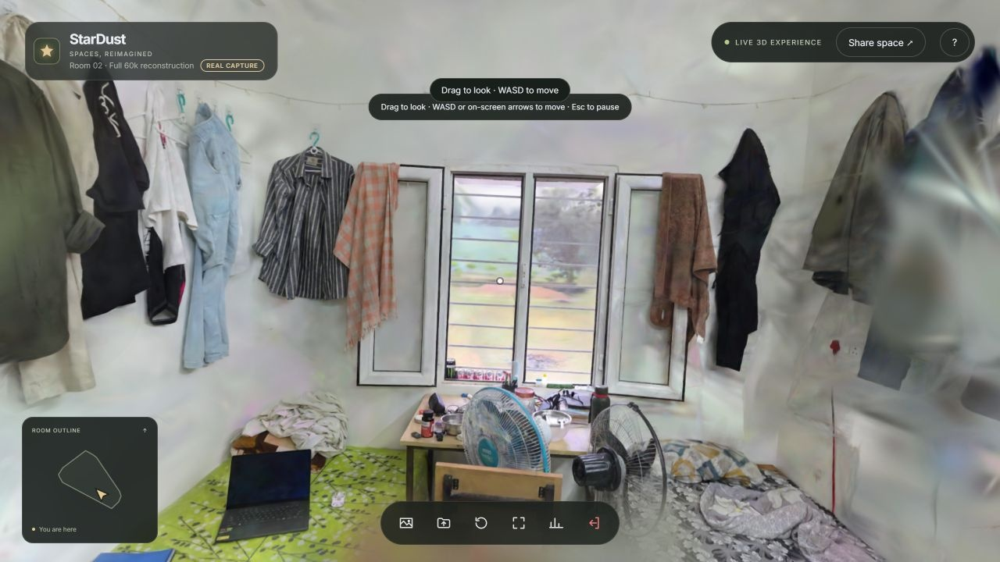
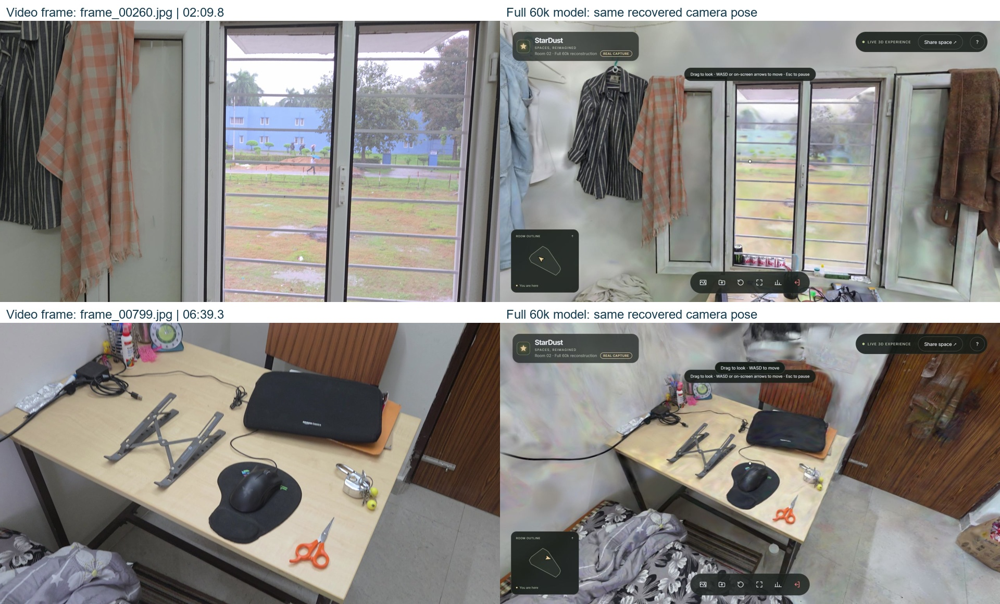
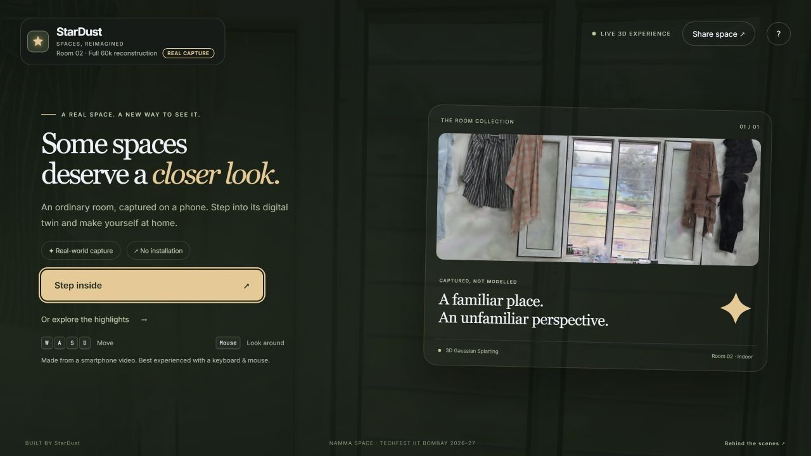

Result: a new 15:01-minute, 4K smartphone recording (room2) was reconstructed into a 1,296,805-Gaussian 3D twin. Local GPU COLMAP registered 1,474 of 1,486 frames (99.2%); Splatfacto trained for 60,000 iterations locally on the RTX 5060 (WSL2), using all 1,474 registered frames at 1600×900. The 29.41 MiB SPZ model is explored with WASD and mouse-look. Figure 3 compares source frames with renders at recovered poses.
1. Problem and proposed solution
A floor plan does not show what a space looks like, and manual 3D modelling does not scale. StarDust is a software-only pipeline:
A non-expert records one walkthrough video following a fixed capture SOP.
Automated scripts select good frames, recover camera poses (COLMAP), train a 3D Gaussian Splatting model (nerfstudio Splatfacto), compress it, and configure the viewer scale, floor and walk boundary through a manifest.
A zero-install web viewer (three.js + Spark) lets anyone roam the room like a video game.
The viewer is a normal three.js scene, so Round 2 POIs and path overlays attach to the same scene graph.
2. System architecture
Figure 1. Pipeline. Each stage is one command in scripts/run_reconstruction.sh / .ps1. Every run lives in its own folder, every native command is exit-checked, and timings and exact file sizes are written to run_metrics.json.
3. Capture SOP and reconstruction methodology
3.1 Capture SOP (capture_sop.md)
Space: one furnished room with even light. Remove moving objects and private items, and cover mirrors.
Phone: main 1× lens only, AE/AF locked, no zoom and no "super-steady" mode, so the camera keeps one intrinsic model.
Motion: about 0.3 m/s, always translating while turning (parallax), phone at chest height (≈ 1.3 m), 1–3 m from surfaces.
Route: entrance view, outer loop facing the centre with corner pauses, inner loop facing the walls, furniture arcs, then back to the entrance for loop closure.
Failure table: blur, reflections, textureless walls, movement and exposure drift are each mapped to a symptom and a fix.
3.2 Processing
Frame selection: decode at 6 fps and keep the sharpest frame (variance of Laplacian) in each group of 3, giving 2 fps.
Quality gate: reject blur (< max(40, 0.35 × median)), bad exposure, low texture and near-duplicates (dHash). The run stops if fewer than 40 frames remain.
SfM: COLMAP SIFT. With a local CUDA GPU we use exhaustive matching; on Colab CPU, sequential matching. The run stops if fewer than 70 % of frames register.
3DGS:ns-train splatfacto, 60k iterations on all registered frames at 1600×900, initialised from SfM points. Then ns-export and compression to SPZ.
Calibration: COLMAP has no absolute metric scale. Exported splats are aligned to the viewer's y-up coordinates. The room2 manifest sets scale 1.010737, floor -1.252304, a start pose and a 17-vertex walk boundary. Physical dimensions remain approximate until checked against a measured length.
Our contributions (beyond COLMAP, nerfstudio and Spark): the capture SOP; sharpness-based frame selection; fail-fast quality and registration gates; isolated, resumable pipeline runs with automatic metrics; manifest calibration with photo-vs-render verification; a local-GPU COLMAP path; and the first-person viewer with walk outline, validation, local file opening and robust loading.
4. Technology choices
Layer
Choice
Why (alternatives considered)
Representation
3D Gaussian Splatting [1]
Photoreal, view-dependent appearance at real-time rates in WebGL. NeRF ray marching is too slow for browsers, and meshes (Meshroom) lose thin and glossy detail.
Poses
COLMAP [2]
Reference SfM. Scriptable, gives initial points, and its official CUDA build runs on a laptop GPU. DUSt3R [4] is kept as a fallback for very sparse captures.
Training
Splatfacto / gsplat [5, 6]
One CLI for processing, training and export. The full run uses the local 8 GB RTX 5060 with lossless file-backed uint8 image caches. Apache-2.0, whereas the original 3DGS code is non-commercial.
Viewer
Spark 2.3.1 + three.js
Splats are ordinary three.js objects, so custom FPS controls and future overlays work. Loads PLY, SPZ and SOG. MIT licence.
Delivery
SPZ on Vercel
10.4× smaller than the PLY and decodes on the CPU. The versioned model filename prevents stale browser caches. Static hosting with auto-deploy from git.
5. Reconstruction results (real room, measured)

Figure 2. Wide window-wall view of room2 in the browser walkthrough, rendered from a recovered capture pose. Window frames, curtains, hanging clothes and desk objects retain their spatial arrangement.
10.4× smaller; SPZ conversion 6.6 s locally; zero NaN/Inf Gaussians
Viewer configuration
Scale 1.010737; floor -1.252304; 17-vertex walk boundary; eye height 1.6 viewer units

Figure 3. Left: source frames frame_00260.jpg (02:09.8) and frame_00799.jpg (06:39.3). Right: the full 60,000-step model at corresponding recovered poses. The walkthrough uses a wider 60° vertical field of view than the source camera (36.6°). UI overlays and soft surface edges remain; this is qualitative evidence.
Room2 reconstruction coverage. Exhaustive matching on the local RTX 5060 produced a main component with 1,474 registered cameras from 1,486 quality-filtered frames. A separate 11-camera component was not used for the submitted training run. High registration improves pose coverage, but does not by itself guarantee sharp surfaces.
Room2 processing stage
Recorded duration
Frame extraction / sharpest-of-three selection
882 s (14.7 min)
GPU feature extraction / exhaustive matching
49.5 s / 7,500.9 s (125.0 min)
Incremental mapping
49,976.1 s (13.88 h)
Import existing COLMAP model on Colab
63 s (conversion/import; excludes local SfM)
Sources: local SfM reports and submission/room2_full_run.json. The 63 s Colab import is historical. This all-frame fit has no held-out score; cold load and sustained FPS remain unbenchmarked.
6. Web viewer and interaction design
Start card with a control legend. The progress bar shows MB downloaded, and Start is enabled only after the model has decoded.
Movement: pointer-lock mouse-look (pitch ±85°) and WASD at 1.4 m/s (Shift 2×) with smoothed acceleration. The camera stays at a configured eye height of 1.6 viewer units above the floor; Q/E adjust eye level.
Walk outline: each step is tested as a segment against the outline polygon, with wall sliding. This is a navigation boundary, not collision: splats have no surfaces.
Robustness: field-by-field manifest validation; a single preallocated download buffer with stall timeout; clear errors for missing files, HTML 404s, no WebGL2 and context loss; drag-to-look fallback.
Extras: open or drop any local .spz/.ply/.sog to view it (it never leaves the browser); a ?calibrate panel; a technical HUD (FPS, splats, size, load time).

Figure 4. Viewer start card (StarDust theme) with the full-frame, 60,000-step room2 model loaded.
7. Testing methodology
Automated (npm test, run in GitHub Actions on every push):
JS test coverage: manifest validation; an L-shaped walk outline, including a regression for diagonal corner-cutting and a 60,000-step random-walk test; spawn projection.
Python test coverage: frame extraction; quality gate pass, fail and zero frames; splat statistics with the draft manifest.
CI also runs the production build, checks the built site contains its model, and smoke-tests the bash pipeline up to COLMAP.
Pipeline: every failure found during the real run is reproduced and fixed with a check: silent shell exit, missing CUDA in apt COLMAP, RAM exhaustion during the gsplat build, PyTorch 2.6 checkpoint loading, and missing WebGPU for SOG.
Model: COLMAP statistics, renders at recovered poses compared with the photos (Figure 3), and load and console checks on the deployed URL from a fresh session.
8. Limitations, reproducibility and roadmap
Limitations
Room2 has high camera registration, but textureless walls and fine detail still show soft surfaces, floaters and view-dependent artefacts.
No physical collision: the camera can pass through furniture inside the outline.
Room2 scale is configured in the manifest; absolute dimensions and navigation distances need validation against a measured reference.
Exhaustive SfM is costly: room2 mapping took 13.88 h locally. The full model is trained locally; the earlier Colab subset was limited by runtime availability.
Reproducibility
Exact version pins, one script per platform plus a Colab notebook, per-run metrics, documented environment, and sample data in test/. A new room is swapped in through one manifest file.
Roadmap
Next: reduce room2 mapping time with frame selection and matching strategy tuning; benchmark cold load and sustained FPS; validate scale against a measured reference.
Round 2: a floor occupancy grid from splats and SfM points, A* paths drawn as a floor ribbon, collision against that grid, and POIs with click-to-label and search-to-jump.
Quality: depth and normal priors and line and plane cues (IndoorGS [3]) for flat indoor walls.
Scale and AR: multi-room capture with doorway linking passes; WebXR navigation localised against the SfM map.
9. References and acknowledgements
B. Kerbl, G. Kopanas, T. Leimkühler, G. Drettakis. 3D Gaussian Splatting for Real-Time Radiance Field Rendering. ACM TOG (SIGGRAPH) 42(4), 2023.
J. L. Schönberger, J.-M. Frahm. Structure-from-Motion Revisited. CVPR 2016.
C. Ruan, Y. Wang, T. Guan, B. Zhang, L. Ju. IndoorGS: Geometric Cues Guided Gaussian Splatting for Indoor Scene Reconstruction. CVPR 2025.
S. Wang, V. Leroy, Y. Cabon, B. Chidlovskii, J. Revaud. DUSt3R: Geometric 3D Vision Made Easy. CVPR 2024.
V. Ye et al. gsplat: An Open-Source Library for Gaussian Splatting. JMLR 26, 2025.
M. Tancik et al. Nerfstudio: A Modular Framework for Neural Radiance Field Development. SIGGRAPH 2023.
Third-party software, used under licence: COLMAP 4.2.1 (BSD-3); nerfstudio 1.1.5 and gsplat 1.4.0 (Apache-2.0); Spark 2.3.1, three.js 0.186.1, splat-transform 3.10.1 and Vite 8.3.4 (MIT); FFmpeg via imageio-ffmpeg (LGPL/GPL binary, BSD-2 wrapper); NumPy and Pillow; Inter and JetBrains Mono fonts (OFL); Google Colab for GPU time; Vercel for hosting. Full list in references.md.